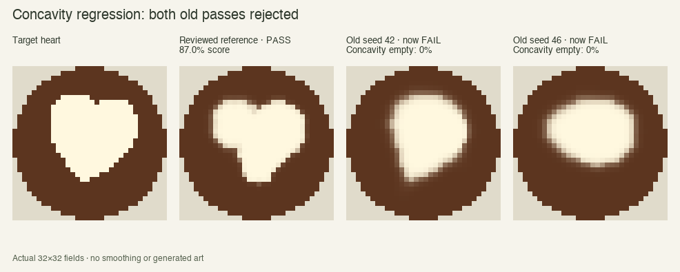
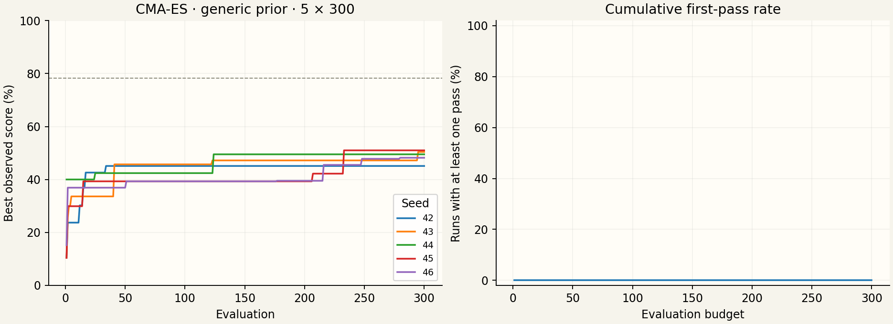
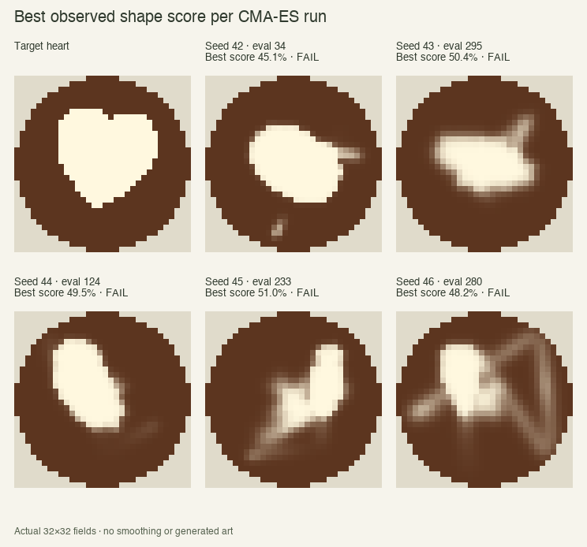
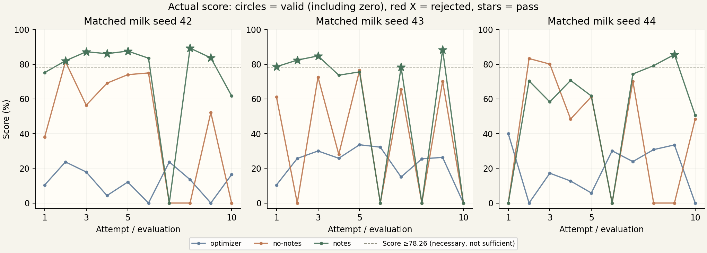
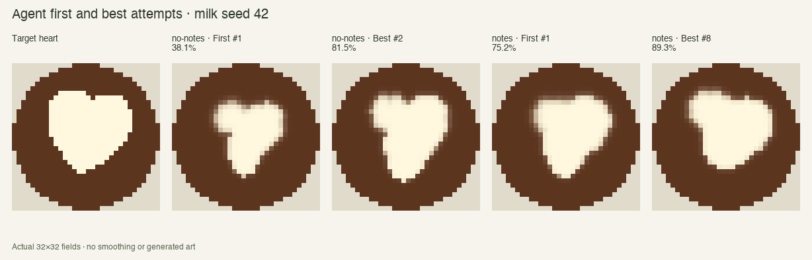
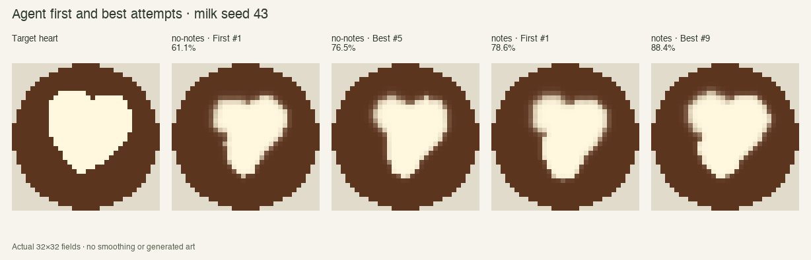
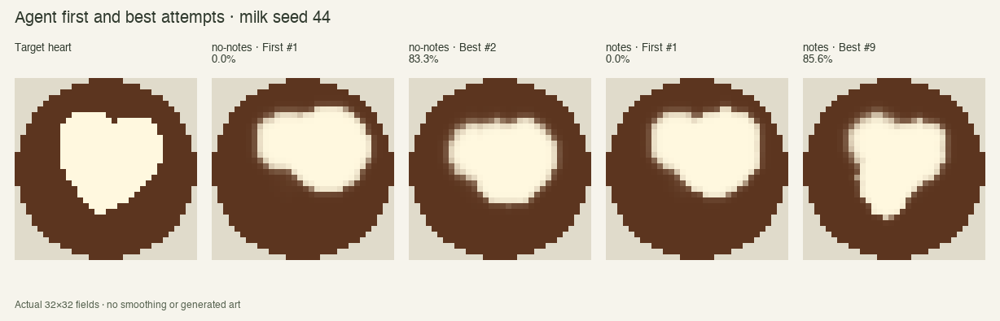
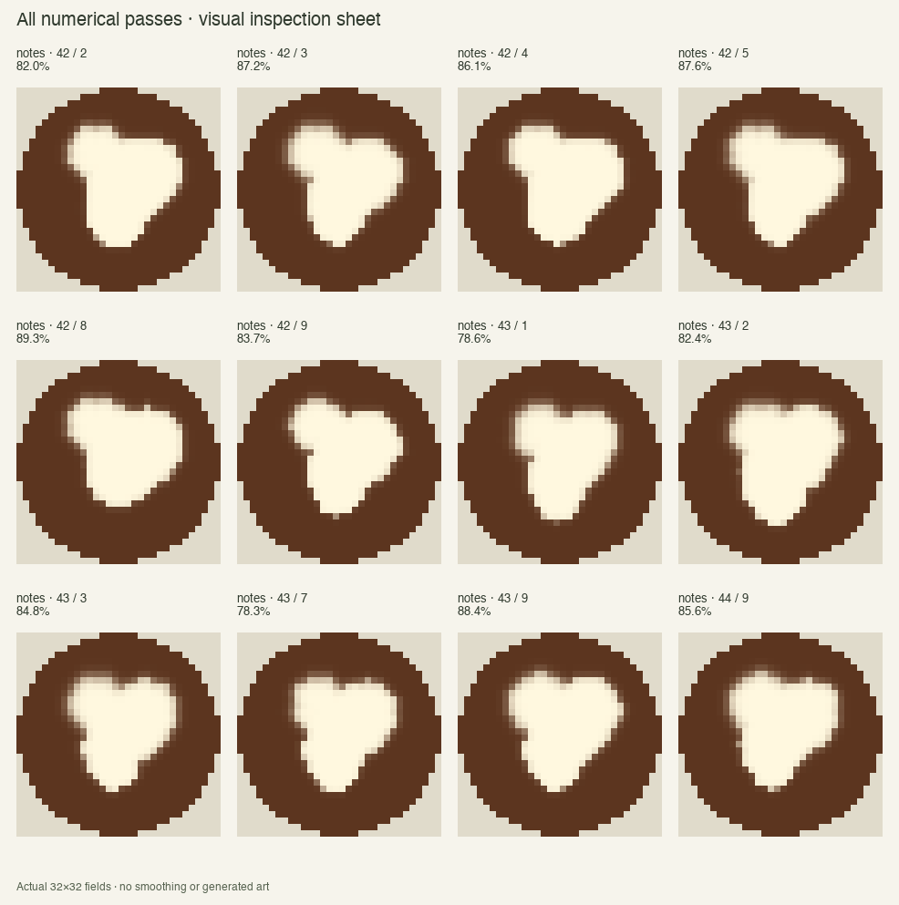

v0.6 · 32×32 · same 33 physical parameters and milk schedules · heart only · Complete
Observed passes: 0/1500 CMA-ES; 0/30 agent without notes; 12/30 agent with notes. Conservative API cost estimate $8.87569 of $20.
Build the convex hull of target foreground cell centres and rasterize it on the same grid. Hull minus target defines the concave cells. At least 80% must be empty (foam density below 0.25), using the same rule for every shape. Empty concavity sets pass vacuously. Existing heart IoU, boundary and precision thresholds are unchanged. Display score and optimizer shape objective now use min(IoU, boundary F1, concavity empty fraction); serving penalties remain unchanged.
The current heart has only one such cell, so this is a binary, low-resolution notch check, not a guarantee of recognisable heart art. Both old CMA-ES false positives fill it. The reviewed reference does not.
| Pour | IoU | Boundary F1 | Concavity empty | New score | Verdict |
|---|---|---|---|---|---|
| CMA-ES seed 42, eval 219 | 84.98% | 92.93% | 0% | 0.0% | FAIL |
| CMA-ES seed 46, eval 270 | 80.16% | 83.33% | 0% | 0.0% | FAIL |
| Reviewed reference | 86.96% | 91.09% | 100% | 87.0% | PASS |

Five independent seeds 42–46, 300 evaluations each. Same generic starting vector, sigma 0.23 and population 8. One evaluation per new candidate on the next randomized milk episode; no reference initialization or repeated candidate averaging.
| Seed | First pass / 300 | Pass count | Best score |
|---|---|---|---|
| 42 | not reached | 0 | 45.1 |
| 43 | not reached | 0 | 50.4 |
| 44 | not reached | 0 | 49.5 |
| 45 | not reached | 0 | 51 |
| 46 | not reached | 0 | 48.2 |


Visual inspection of all five best-score candidates: irregular patches, ovals or blobs; none has a convincing heart silhouette.
The one-cell concavity check makes the score drop to zero whenever that cell is filled. This creates a discontinuous objective and can flatten CMA-ES's search landscape. A model/optimizer gap under this scorer is not by itself evidence that notes teach a transferable skill.
Requested and catalogue-listed model: GPT-6 Astra, identified as OpenAI's most capable model in official documentation. Planning uses medium reasoning, reflection low reasoning, with completion caps 4096 / 2048 including reasoning tokens. Same 3 seeds, 10 episode slots each in no-notes and notes modes. Both modes reflect; no-notes discards its note. No reference plan is supplied.
Strict JSON Schema: exactly 33 finite normalized values in [0,1], no extra keys. Each parameter's units, physical bounds, meaning and decoding formula are documented in the planning payload. Malformed or out-of-bounds submissions receive the validation error and up to two corrections within the same episode, without physics execution or extra attempt charge. All provider calls still count toward $20; format errors and terminal rejections are separate logs. No simulator, scorer, threshold or prompt tuning during the rerun.
| Mode | Seed | Attempts | First pass | Best score | Format errors / repairs / rejections | Cost upper estimate | Mean cost / attempt | Cost to first pass |
|---|---|---|---|---|---|---|---|---|
| no-notes | 42 | 10 | not reached | 81.5 | 0 / 0 / 0 | $1.57954 | $0.15795 | not reached |
| notes | 42 | 10 | 2 | 89.3 | 0 / 0 / 0 | $1.43275 | $0.14327 | $0.29699 |
| no-notes | 43 | 10 | not reached | 76.5 | 0 / 0 / 0 | $1.47635 | $0.14764 | not reached |
| notes | 43 | 10 | 1 | 88.4 | 0 / 0 / 0 | $1.39301 | $0.13930 | $0.17041 |
| no-notes | 44 | 10 | not reached | 83.3 | 0 / 0 / 0 | $1.55596 | $0.15560 | not reached |
| notes | 44 | 10 | 9 | 85.6 | 0 / 0 / 0 | $1.43807 | $0.14381 | $1.29545 |
Calls: 120. Conservative token cost upper estimate: $8.87569; pending/unresolved reserve $0.00000. Standard usage-detail estimate (fresh input $10/M, cache reads $1/M, writes $12.50/M, output including reasoning $50/M): $8.87479. Gateway dollar costs may be absent; token-derived amounts are not invoices. Cap $20, checked before every call using a reserved upper bound, including format repairs. Stop reason: none.
Scores below are the actual attempt at that index, not the maximum. The separate last column is best-so-far. All use identical milk episodes on seeds 42–44. Rejected plans count as zero in summary statistics but have red X markers in plots; valid zero scores use circles. SD is sample standard deviation across three seeds. Missing attempts are not imputed.

| Attempt | Controller | Actual scores: 42 / 43 / 44 | Mean ± SD | Best-so-far: 42 / 43 / 44 |
|---|---|---|---|---|
| 1 | optimizer | 10.4 / 10.4 / 40.0 | 20.3 ± 17.1 | 10.4 / 10.4 / 40.0 |
| 1 | no-notes | 38.1 / 61.1 / 0.0 | 33.1 ± 30.9 | 38.1 / 61.1 / 0.0 |
| 1 | notes | 75.2 / 78.6 / 0.0 | 51.3 ± 44.4 | 75.2 / 78.6 / 0.0 |
| 3 | optimizer | 17.9 / 30.0 / 17.2 | 21.7 ± 7.2 | 23.7 / 30.0 / 40.0 |
| 3 | no-notes | 56.4 / 72.6 / 80.1 | 69.7 ± 12.1 | 81.5 / 72.6 / 83.3 |
| 3 | notes | 87.2 / 84.8 / 58.3 | 76.8 ± 16.0 | 87.2 / 84.8 / 70.4 |
| 5 | optimizer | 12.1 / 33.6 / 5.8 | 17.2 ± 14.6 | 23.7 / 33.6 / 40.0 |
| 5 | no-notes | 74.0 / 76.5 / 61.3 | 70.6 ± 8.2 | 81.5 / 76.5 / 83.3 |
| 5 | notes | 87.6 / 75.6 / 61.7 | 75.0 ± 13.0 | 87.6 / 84.8 / 70.7 |
| 10 | optimizer | 16.4 / 0.0 / 0.0 | 5.5 ± 9.5 | 23.7 / 33.6 / 40.0 |
| 10 | no-notes | 0.0 / 0.0 / 48.4 | 16.1 ± 27.9 | 81.5 / 76.5 / 83.3 |
| 10 | notes | 61.8 / 0.0 / 50.6 | 37.5 ± 32.9 | 89.3 / 88.4 / 85.6 |



| Controller | Seed | Attempt | Visual review |
|---|---|---|---|
| notes | 42 | 2 | Rough heart-like shape with a higher left lobe, shallow central notch and wide right lobe. Lower body is asymmetric and ends in a rounded blunt point; passes numerically but has substantial room for visual improvement. |
| notes | 42 | 3 | Clear two-lobe heart-like silhouette with a visible dip between lobes. Left lobe is higher; right lobe bulges outward and the lower point is blunt and off-centre. Higher numerical overlap than the reference does not mean better symmetry. |
| notes | 42 | 4 | Heart-like silhouette with two unequal upper lobes, visible shallow notch and tapered lower body. The point remains blunt, and the left shoulder/right bulge make it noticeably asymmetric. |
| notes | 42 | 5 | Weak, asymmetric heart-like silhouette: high rounded left lobe, broad lower right lobe, shallow dip between them and a blunt tapered tip. The high score overstates the visual polish; it is not a clean symmetric heart. |
| notes | 42 | 8 | Marginal visual match despite its 89.3% score. Rounded asymmetric body, high left lobe and barely visible shallow dip; right lobe dominates and the base is broad/blunt. Weakly heart-like, with a less convincing notch than the reviewed reference. The one-cell check is not sufficient for visual quality. |
| notes | 42 | 9 | Asymmetric heart-like shape: raised left lobe, broad right lobe, a shallow central dip and a narrowing but blunt lower tip. Clearer taper than attempt 8, though still a weak visual match to a symmetric heart. |
| notes | 43 | 1 | Recognisable asymmetric heart: two rounded lobes and a shallow central notch, with a tapered lower body and blunt tip. The right side dominates; it is not a clean symmetric heart. |
| notes | 43 | 2 | Rough asymmetric heart: two upper lobes with a very shallow central dip, broad right side and elongated blunt lower point. The notch is visibly weaker than the target; not an oval, but not clean latte art. |
| notes | 43 | 3 | Recognisable heart-like silhouette: both lobes and the shallow central notch are visible. Right half is fuller and the left edge has a shoulder; the lower tip is still rounded. Not an oval. |
| notes | 43 | 7 | Small heart-like shape with two rounded lobes, a shallow notch, and a narrowing blunt tip. Right side is fuller and left edge has a shoulder; less target coverage than the stronger passes, but visibly not an oval. |
| notes | 43 | 9 | Two-lobe heart-like silhouette with a shallow dip, taller left lobe, broad right side and blunt lower point. High overlap but pronounced asymmetry; not a clean heart. |
| notes | 44 | 9 | Recognisable rough heart: two rounded upper lobes with a small central notch and a taper toward the lower point. Right side is fuller and the point remains blunt. Better visual separation of the lobes than the marginal seed-42 attempt-8 pass. |

pass-notes-seed-42-attempt-2 · pass-notes-seed-42-attempt-3 · pass-notes-seed-42-attempt-4 · pass-notes-seed-42-attempt-5 · pass-notes-seed-42-attempt-8 · pass-notes-seed-42-attempt-9 · pass-notes-seed-43-attempt-1 · pass-notes-seed-43-attempt-2 · pass-notes-seed-43-attempt-3 · pass-notes-seed-43-attempt-7 · pass-notes-seed-43-attempt-9 · pass-notes-seed-44-attempt-9
All numerical passes are listed, including any that look wrong. Visual review does not retroactively alter the frozen score.
Only three matched agent seeds were tested. A first-attempt pass is evidence of a useful prior, not feedback-driven learning: both modes begin without notes. Notes retain feedback between attempts, but this pilot does not test held-out milk or held-out shapes, train model weights, or verify gateway-side memory isolation. The scorer, interface and model changed together from the previous pilot, so cross-pilot improvements cannot isolate their individual effects. The concavity gate is only one cell for this target; visual reviews remain essential.
A pass requires all shape and serving checks. The dashed 78.26% score floor is necessary but not sufficient; an 83% shape can still fail because of boundary, precision or spills. No thresholds were adjusted after seeing pilot outputs.
Summary and per-attempt records · Scorer regression evidence · Independent verification. Full plans, foam fields, traces, responses, schemas and cost ledger: results/heart-pilot-v2/. Tulip was dropped from this rerun.